Introduction
The 3D Asset Viewer is a tool which allows users to edit the basic properties of a 3D model, and wrap the resultant asset in a QML file, which can be used directly in 3D QML applications.
It is possible for users to embed 3D models (such as .3ds or .obj files) in Qt Quick 3D applications directly. However, in most cases, the original scale,rotation, position, or material of the model may not meet the developer's requirements. The 3D Asset Viewer exists to remedy this problem, allowing the developer to modify a model's properties, and create QML object files for import directly into Qt Quick 3D applications.
How does it work?
The 3D Asset Viewer creates a QML file based on the 3D model. The user can visually rotate, scale, and translate the model in 3D space, as well as changing the material colour and texture for the model. Once saved, the QML file can be used in other Qt3D programs as a standard element.
A user may, for example, wish to use a 3D model of a car (specified in the file car.3ds) in their Qt Quick 3D application. The model specified in the .3ds file, however, is the wrong size, and the user would like to be able to change its colour. One option would be to edit the asset file directly using third party modeling software. This is a clumsy approach, however, as it does not then lend itself to easy modification within the QML application, and requires familiarity with (and access to), modeling applications. With 3D Asset Viewer, the user simply loads the asset file, then modifies the scale and material for the model. This is now saved as "Car.qml". The user can now simple copy across the Car.qml file together with car.3ds file to their application directory, and use the "Car" asset in their QML script. The car will be displayed with the correct colour and size in the application.
Consider, for example, the figures shown below. In the instance of 3D Asset Viewer on the left a penguin model is shown as specified directly in the asset file. The version on the right, on the other hand, has been adjusted by the user. Essentially, the 3D Asset Viewer tool starts with a 3D model, makes some changes to its parameters, and outputs a QML asset that can be used in a 3D QML application. 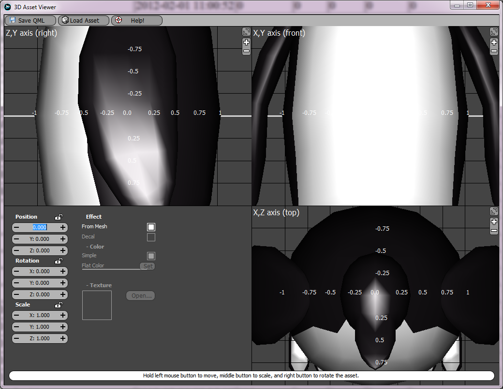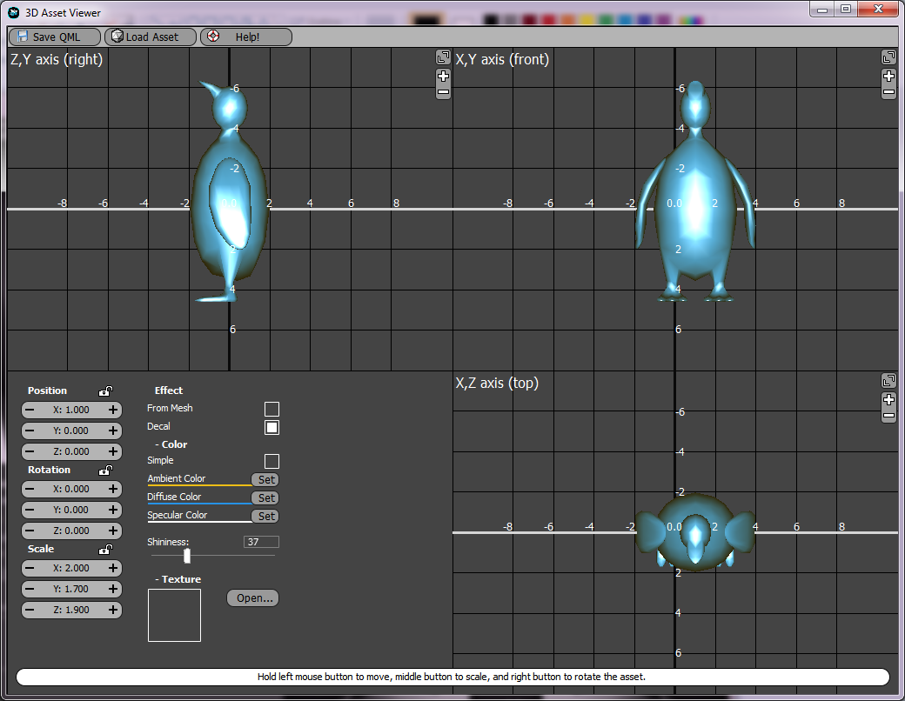
Using 3D Asset Viewer
The interface of the 3D Asset Viewer (shown in the figure below) consists of a number of main components: a menu bar, a status bar, and four panels (one viewport each for the x,y, and z axes, and a control panel).
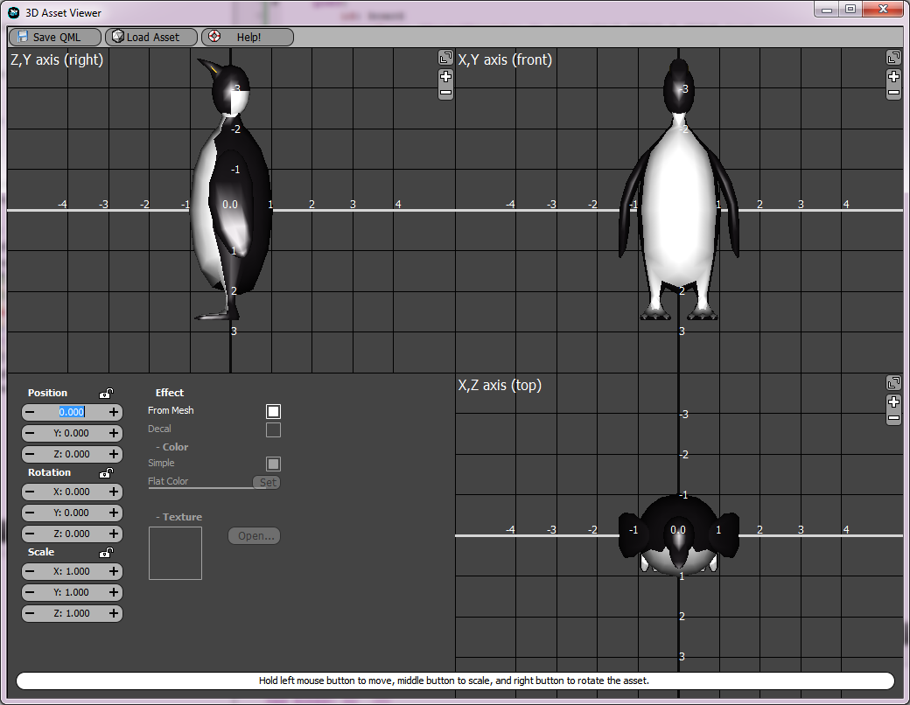
The menu bar on top has three buttons, for saving QML, loading and displaying a 3D asset file, and displaying this help page respectively: 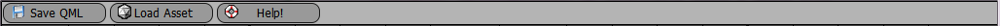
The status bar on the bottom tells user how to use the three mouse buttons to adjust the model. 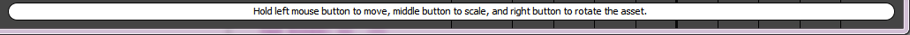 Of the four panels, the bottom-left displays the properties of the 3D asset (rotation, scaling, translation, material, etc), and allows user to modify them by clicking or typing values. Specific usage of these is discussed later in this help document. 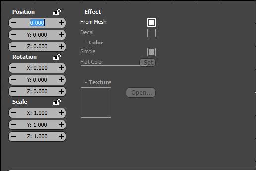 The remaining panels st displays the "Right", "Front", and "Top" view of the 3D asset. These panels can be maximised by clicking on the button on the top right corner, and reduced the the normal view by clicking on the button again. It is also possible to change the viewport scale by clicking on the button on the top right to meet the specific scale needed by the user. Gridlines and measurements are provided for scale references in the viewports. 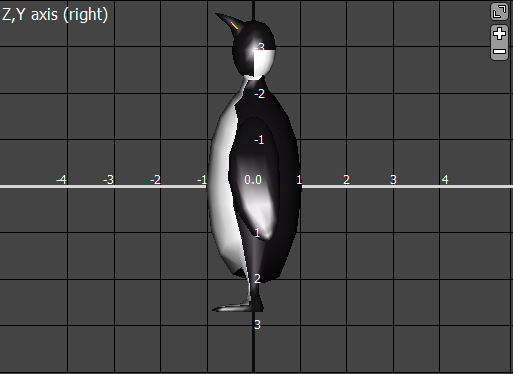 Tutorial: create a qml model file and use it in a project
1. Loading the Model
The 3D Asset Viewer executable can be found in the /bin directory of the Qt3D directory. On start-up, the 3D Asset Viewer will automatically load a penguin model. By clicking on the menu button "Load Asset", which is on the middle of the menu bar, a new asset file can be selected. After choosing a model file, the penguin will be replaced with the newly loaded model in the viewport panels.
2. Translating, Rotating, Resizing
Now that the model is loaded, the mouse can be used to translate, rotate, or resize the object in the views. As indicated in the status bar, moving the mouse while holding left button will result in translation, holding the middle button will scale the object, and holding the right button will rotate the object. By performing this action on each specific viewport, it is possible to change the translation, rotation, and sizes of the object in all directions.
Alternatively, the property pane can be used to change these parameters. By clicking on the +/- in the value capsules , the values can be changed. Likewise the numerical value can be edited direclty by clicking in the value field and typing in the desired value precisely. 3. Changing Effects
The term "Effects" refers to the material, texture, and/or color of the object. One can change the effect applied to the object using the property pane. By default the effects are inherited from the 3D model. However, these values can easily be overwritten by un-checking the "From Mesh" box. The user is now free to assign simple color(RGBA color) or complex color(ambient, diffused, specular, plus shininess) to the object, and change the texture of the object by opening an image file.
The figure below shows a ¡°monkeygod¡± model with simple and complex color assigned: 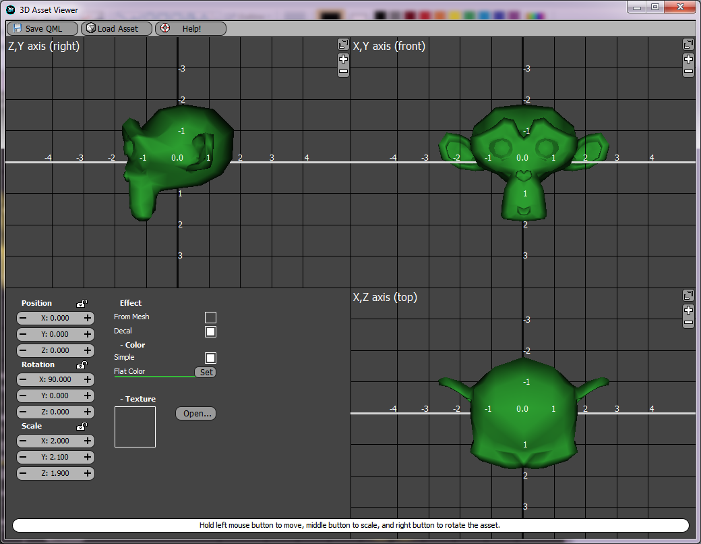 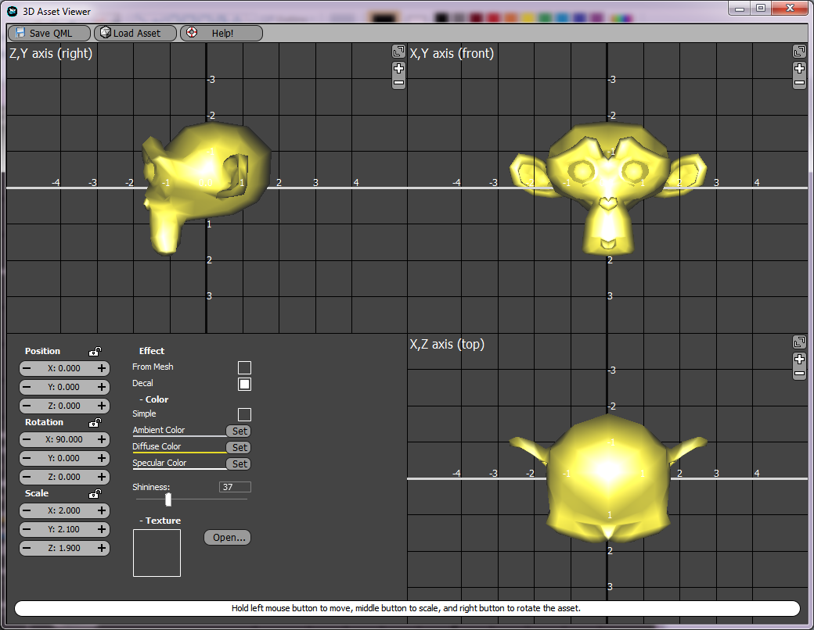
4. Saving as QML asset
When the asset is adjusted to meet the user's requirements, it can be saved as a QML asset file. Clicking the "Save QML" button on the menu bar, will prompt the user to specify a file name. Please note, the first letter of the file name must be capitalized, so that it can be used as an element in other QML files. For example, "Penguin.qml" is a valid file name, while "penguin.qml" is not.
5. Using generated QML asset in your project
To use the QML asset in a 3D QML project, simply copy the QML asset into the directory where your QML file exists, together with all necessary resources, ie. model files, texture images etc. , and use it as a QML element in the application. For example, given an asset saved as "Penguin.qml", the following code can be used to reference it:
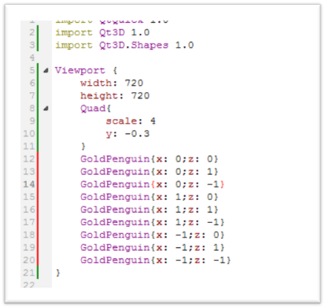
The result of this QML file is shown below:
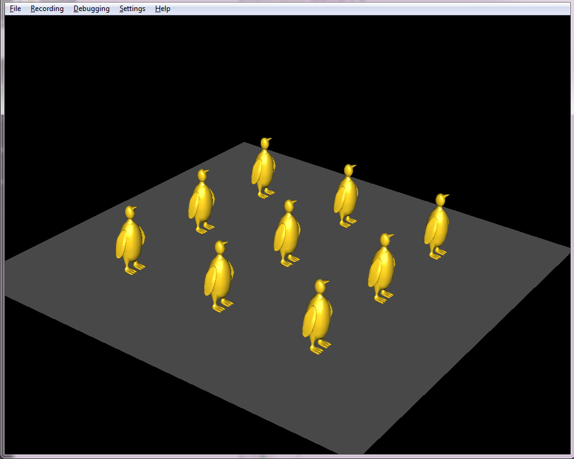
Further information
In summary, the 3D asset viewer is a useful utility for Qt3D developers to wrap 3D models as 3D QML assets. It allows for modification of properties of the model in the asset, and makes using assets in other QML projects easy.
The source code of this tool is shipped in Qt3D package, residing in <Qt3D_dir>/utils/Qt3D/AssetViewer/.
For more information about Qt3D, please visit http://doc.qt.nokia.com
|